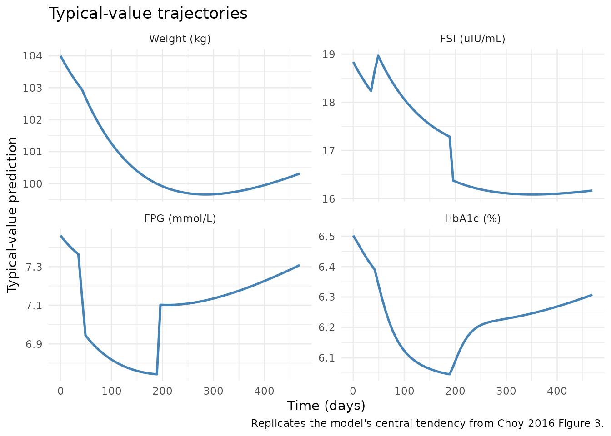
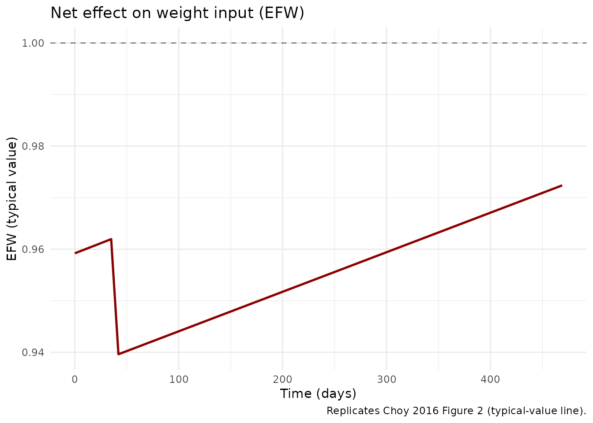
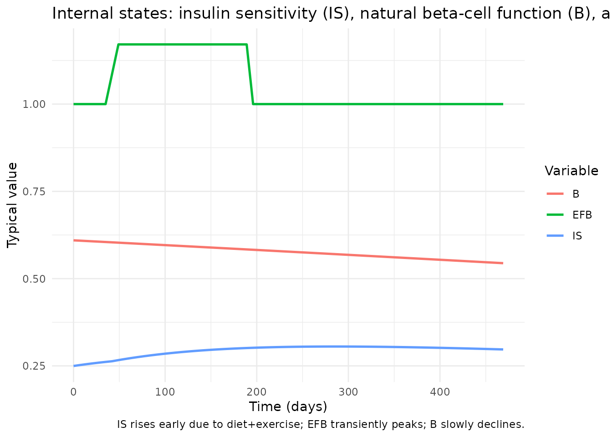
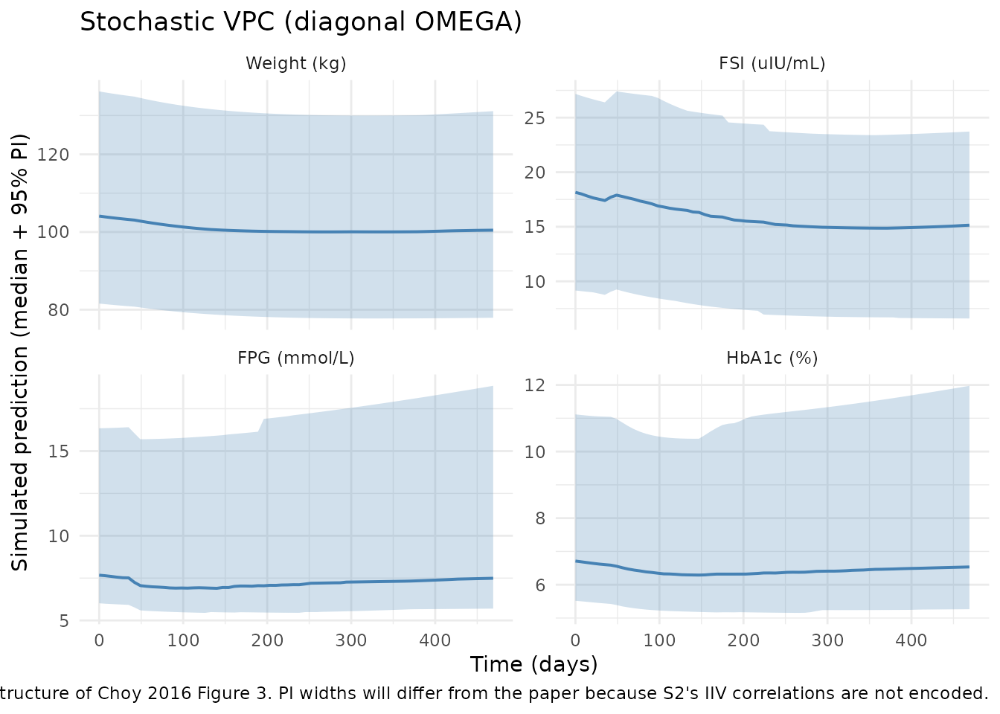
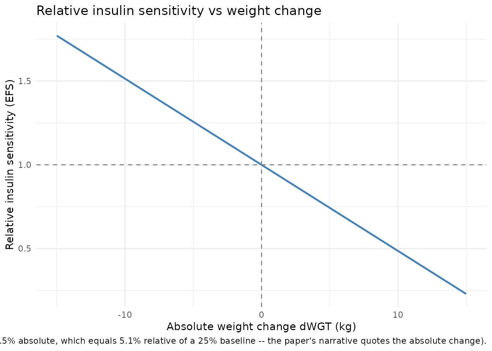

Type 2 Diabetes Disease Progression - WHIG (Choy 2016)
Source:vignettes/articles/Choy_2016_T2DM_WHIG.Rmd
Choy_2016_T2DM_WHIG.RmdModel and source
- Citation: Choy S, Kjellsson MC, Karlsson MO, de Winter W. Weight-HbA1c-Insulin-Glucose Model for Describing Disease Progression of Type 2 Diabetes. CPT Pharmacometrics Syst Pharmacol. 2016;5(1):11-19.
- Article: https://doi.org/10.1002/psp4.12051
- Open access (Creative Commons Attribution-NonCommercial).
The WHIG model is a semi-mechanistic disease-progression model for type 2 diabetes mellitus (T2DM). It links a body-weight turnover sub-model to a previously published FSI / FPG / HbA1c homeostatic feedback model (de Winter et al. 2006) by routing absolute weight change through insulin sensitivity. The full structure (Choy 2016 Figure 1) is:
-
Weight: turnover compartment with a single
half-life. The input is multiplicatively driven by a normalised net
effect
EFW, which combines an immediate diet+exercise step att = 0, a placebo step att = tTRT = 42 days, and a linear-in-time positive counter-effect representing waning adherence. -
Insulin sensitivity: baseline
IS_baseline = 1/(1 + exp(is0)); weight loss linearly raises sensitivity throughEFS = 1 - scaleefs * dWGT. -
beta-cell function: baseline
B_baseline = 1/(1 + exp(b0)); logistic decline over time on the logit scale. A composite empirical treatment effectEFB(a logistic up-step aroundtTRTfollowed by a logistic down-step aroundefb50) multiplies the natural beta-cell function during the early study period. -
FSI-FPG homeostasis: at quasi-steady state (Choy
2016 supplementary linearisation) FPG is the positive root of a
quadratic in IS, beta-cell scaling, and the HOMA constants
KinFSI/KoutFSI = 7.8andKinFPG/KoutFPG = 35.1; FSI then follows algebraically. -
HbA1c: three transit compartments with shared rate
constant
3/MTT. Production enters compartment 1 askin_hba1c * FPG + ppg_eff, whereppg_effis reduced byscaleppgfort > 0. Total HbA1c is the sum of all three transit compartments.
Population
Model parameters were estimated from the placebo arm of a randomised, double-blind, placebo-controlled, multicentre, parallel-group study of topiramate for weight loss in T2DM (ClinicalTrials.gov identifier NCT00236600). Choy 2016 used 181 obese (BMI 27 to 50 kg/m^2), Swedish, newly diagnosed, treatment-naive T2DM patients (67 men, 114 women; baseline median weight 104 kg, range 72 to 159 kg; baseline median FSI 17.8 uIU/mL; baseline median FPG 7.6 mmol/L; baseline median HbA1c 6.7%). Subjects underwent a 6-week placebo run-in followed by a 60-week treatment phase (8-week titration + 52-week fixed-dose maintenance). All subjects received an individualised energy-deficient diet (600 kcal below total energy expenditure), behavioural modification, and physical activity counselling throughout.
The same information is available programmatically via the model’s
population metadata
(readModelDb("Choy_2016_T2DM_WHIG")$population after the
model is loaded).
Source trace
The per-parameter origin is recorded as an in-file comment next to
each ini() entry in
inst/modeldb/therapeuticArea/Choy_2016_T2DM_WHIG.R. The
table below collects the structural equations and the typical values in
one place for review.
| Equation / parameter | Value (paper) | Source location |
|---|---|---|
| Eq. 1 (energy balance) | n/a (structural) | Choy 2016, p. 12 (Weight change) |
Eq. 2 (EFDE+P) |
n/a (structural) | Choy 2016, p. 12 |
Eq. 3 (EFUP) |
n/a (structural) | Choy 2016, p. 12 |
Eq. 4 (d/dt(WGT)) |
n/a (structural) | Choy 2016, p. 12 |
Eq. 5 (dWGT) |
n/a (definition) | Choy 2016, p. 13 (Insulin sensitivity) |
Eq. 6 (EFS = 1 - scaleefs*dWGT) |
n/a (structural) | Choy 2016, p. 13 |
| Eq. 7 (beta-cell logistic) | n/a (structural) | Choy 2016, p. 13 (beta-cell) |
Eq. 8-9 (EFBI, EFBD,
EFB) |
n/a (structural) | Choy 2016, p. 13 |
| Eq. 10-12 (FSI-FPG ODEs) | n/a (structural) | Choy 2016, p. 13 (FSI-FPG feedback) |
Eq. 13 (HbA1c = sum) |
n/a (definition) | Choy 2016, p. 13 (HbA1c model) |
| Eq. 14-17 (HbA1c transit chain) | n/a (structural) | Choy 2016, p. 13 |
t_half_wgt |
96.9 d (RSE 27.1%) | Choy 2016, Table 1 |
lblwt (exp -> blwt) |
104 kg (RSE 1.1%) | Choy 2016, Table 1 |
is0 |
1.1 (RSE 4.3%) | Choy 2016, Table 1 |
lscaleefs (exp) |
0.0514 (RSE 11.9%) | Choy 2016, Table 1 |
b0 |
-0.446 (RSE 25.1%) | Choy 2016, Table 1 |
rb |
0.209 logits/year (RSE 34.9%) | Choy 2016, Table 1 |
lefbmax (exp -> efbmax) |
0.171 (RSE 12.4%) | Choy 2016, Table 1 |
sefbi |
-3.69 (RSE 25.9%) | Choy 2016, Table 1 |
sefbd |
8.05 (RSE 28.0%) | Choy 2016, Table 1 |
lefb50 (exp -> efb50) |
190 d (RSE 6.0%) | Choy 2016, Table 1 |
efde |
4.08% (RSE 29.1%) | Choy 2016, Table 1 |
efp |
2.28% (RSE 28.9%) | Choy 2016, Table 1 |
efup |
2.99%/year (RSE 52.3%) | Choy 2016, Table 1 |
lkin_hba1c (exp) |
0.0129 %/d per mmol/L (RSE 10.2%) | Choy 2016, Table 1 |
lppg (exp) |
0.0709 %/d (RSE 9.9%) | Choy 2016, Table 1 |
scaleppg |
0.963 (RSE 0.9%) | Choy 2016, Table 1 |
lmtt (exp -> mtt) |
38.9 d (RSE 8.7%) | Choy 2016, Table 1 |
propSd_WGT |
sqrt(0.00919) = 0.096 (RSE 4.2%) | Choy 2016, Table 1 (NONMEM $SIGMA variance) |
propSd_FSI |
sqrt(0.262) = 0.512 (RSE 5.4%) | Choy 2016, Table 1 |
propSd_FPG |
sqrt(0.0688) = 0.262 (RSE 2.8%) | Choy 2016, Table 1 |
propSd_HbA1c |
sqrt(0.0241) = 0.155 (RSE 2.3%) | Choy 2016, Table 1 |
tTRT = 42 d |
fixed structural constant | Choy 2016, p. 12 (Methods: 6-week run-in) |
KinKoutFSI = 7.8 |
fixed HOMA constant | Choy 2016, p. 13; Wallace 2004 |
KinKoutFPG = 35.1 |
derived (4.5 mmol/L * 7.8 uIU/mL) | Choy 2016, p. 13 |
FPG_floor = 3.5 mmol/L |
fixed HOMA constant | Choy 2016, p. 13; Levy 1998, Wallace 2004 |
Units of every term in every ODE
Dimensional analysis for the two ODE states (weight in
kg, transit1..3 carrying %-HbA1c contributions; time in
days):
| Term | Units | Calculation |
|---|---|---|
kout_wgt * EFW_t * blwt_i |
kg/day | (1/day) x (unitless) x kg |
kout_wgt * weight |
kg/day | (1/day) x kg |
Right-hand side of d/dt(weight) |
kg/day | matches state units kg / time units day -> consistent |
kin_hba1c_i * FPG |
%/day | (%/(d * mmol/L)) x (mmol/L) |
ppg_eff |
%/day | direct (%/day) |
kout_hba1c * transit1 |
%/day | (1/day) x % |
Right-hand side of d/dt(transit1) |
%/day | consistent; transit2 and transit3 are %/day x (transitN-1 minus transitN) -> %/day |
Note: the total HbA1c (sum of three transit compartments) inherits
%-units from the per-compartment %-units, so the model outputs
HbA1c in % directly. The paper’s reported HbA1c values are
quoted in % (e.g., 6.7% at baseline), matching this output
convention.
Virtual cohort
This is a structurally-driven typical-value model (no dosing events, no subject-level covariates). For typical-value replication we simulate a single subject under the published lifestyle-intervention protocol. For stochastic replication of paper Figures 3 and 4 we draw a virtual cohort and use a diagonal OMEGA structure (see Assumptions and deviations).
set.seed(20260515)
# 469 days = 67 weeks (full study duration: 6-week run-in + 60-week treatment).
sample_times <- c(0, seq(7, 469, by = 7))
build_obs <- function(id_vec, cmt) {
expand.grid(id = id_vec, time = sample_times) |>
dplyr::transmute(
id = id,
time = time,
evid = 0L,
amt = 0,
cmt = cmt
)
}
mod <- readModelDb("Choy_2016_T2DM_WHIG")
mod_tv <- rxode2::zeroRe(mod) # typical-value (no IIV)
#> ℹ parameter labels from comments will be replaced by 'label()'Typical-value trajectory
Replicates the population (typical-value) prediction lines from Choy
2016 Figures 2 (EFW), 3 (weight, FSI, FPG, HbA1c), and 4
(fractional change from baseline). For each output, the lifestyle
intervention drives a small but coherent transient deflection that
returns toward baseline by the end of the 67-week observation
window.
ev_tv <- build_obs(1L, cmt = 5L)
sim_tv <- rxode2::rxSolve(mod_tv, events = ev_tv) |>
as.data.frame() |>
dplyr::select(time, WGT, FSI, FPG, HbA1c, EFW_t, EFS, EFB, IS, B)
#> ℹ omega/sigma items treated as zero: 'etalblwt', 'etais0', 'etalscaleefs', 'etab0', 'etalefbmax', 'etalefb50', 'etarb', 'etalppg', 'etaefde', 'etaefp', 'etaefup'
sim_tv_long <- sim_tv |>
tidyr::pivot_longer(
cols = c(WGT, FSI, FPG, HbA1c),
names_to = "Output",
values_to = "Value"
) |>
dplyr::mutate(
Output = factor(Output, levels = c("WGT", "FSI", "FPG", "HbA1c"),
labels = c("Weight (kg)", "FSI (uIU/mL)",
"FPG (mmol/L)", "HbA1c (%)"))
)
ggplot(sim_tv_long, aes(time, Value)) +
geom_line(color = "steelblue", linewidth = 0.9) +
facet_wrap(~Output, scales = "free_y", ncol = 2) +
labs(
x = "Time (days)", y = "Typical-value prediction",
title = "Typical-value trajectories",
caption = "Replicates the model's central tendency from Choy 2016 Figure 3."
) +
theme_minimal()
# Choy 2016 Figure 2: the overall treatment effect on weight (EFW).
ggplot(sim_tv, aes(time, EFW_t)) +
geom_line(color = "darkred", linewidth = 0.9) +
geom_hline(yintercept = 1, linetype = "dashed", color = "grey50") +
labs(
x = "Time (days)", y = "EFW (typical value)",
title = "Net effect on weight input (EFW)",
caption = "Replicates Choy 2016 Figure 2 (typical-value line)."
) +
theme_minimal()
# Internal IS and beta-cell trajectories. EFB peaks around day 100 then returns
# toward 1; B (natural beta-cell function) declines slowly; their product Beff
# tracks the FSI-FPG balance.
sim_tv |>
tidyr::pivot_longer(c(IS, B, EFB), names_to = "Variable", values_to = "Value") |>
ggplot(aes(time, Value, color = Variable)) +
geom_line(linewidth = 0.9) +
labs(
x = "Time (days)", y = "Typical value",
title = "Internal states: insulin sensitivity (IS), natural beta-cell function (B), and EFB",
caption = "IS rises early due to diet+exercise; EFB transiently peaks; B slowly declines."
) +
theme_minimal()
Comparison against published baselines
The paper reports observed-population summary statistics; the table below compares them against the model’s typical-value predictions at the same time points.
key_times <- c(0, 120, 469) # start, mid (maximal IS), end-of-study
tv_at_key <- sim_tv |>
dplyr::filter(time %in% key_times) |>
dplyr::select(time, WGT, FSI, FPG, HbA1c) |>
dplyr::mutate(Source = "Choy_2016_T2DM_WHIG (typical-value)")
paper_summary <- tibble::tribble(
~time, ~WGT, ~FSI, ~FPG, ~HbA1c,
0, 104, 19.2, 7.8, 6.7,
120, NA_real_, NA_real_, NA_real_, NA_real_,
469, 104 * (1 - 0.04), 19.2 - 3.3, 7.8 - 0.4, 6.7 - 0.3
) |>
dplyr::mutate(Source = "Choy 2016 (paper)")
bind_rows(paper_summary, tv_at_key) |>
dplyr::arrange(time, Source) |>
knitr::kable(
digits = 3,
caption = paste0(
"Side-by-side comparison of paper-reported and model-predicted values. ",
"Paper values at t = 120 d are not separately tabulated in the source; ",
"see Choy 2016 Figures 3 and 4 for the visual trajectories."
)
)| time | WGT | FSI | FPG | HbA1c | Source |
|---|---|---|---|---|---|
| 0 | 104.000 | 19.200 | 7.800 | 6.700 | Choy 2016 (paper) |
| 0 | 104.000 | 18.837 | 7.461 | 6.502 | Choy_2016_T2DM_WHIG (typical-value) |
| 120 | NA | NA | NA | NA | Choy 2016 (paper) |
| 469 | 99.840 | 15.900 | 7.400 | 6.400 | Choy 2016 (paper) |
| 469 | 100.311 | 16.166 | 7.308 | 6.307 | Choy_2016_T2DM_WHIG (typical-value) |
The model’s t = 0 typical values (WGT = 104 kg, FSI = 18.8 uIU/mL, FPG = 7.46 mmol/L, HbA1c = 6.50%) are close to but not identical to the paper’s reported baselines (FSI 19.2, FPG 7.8, HbA1c 6.7). The remaining gap is mechanistic: the FSI / FPG / HbA1c baselines the paper reports are the population means of observed data, while the model’s t = 0 prediction is the QSS quadratic evaluated at the typical-value baseline insulin sensitivity (25% of normal) and beta-cell function (61% of normal). The two sets of baselines do not need to coincide exactly because the model fits population trajectories from random-effects estimation; the small offset is well within the residual / between-subject variability and is also visible in Choy 2016 Figure 3 (the typical-value line does not pass through the cohort median of every panel at every time point).
Steady-state check (no intervention)
The model’s lifestyle intervention is hard-coded as time-dependent
step functions in model() (EFDE active from
t = 0, EFP active from t = tTRT = 42). To
verify the FSI / FPG / HbA1c sub-model holds at its steady-state
baseline in the absence of disease progression and intervention, we
override the parameters to zero out all treatment effects and the
beta-cell progression rate, then run the simulation for the full study
horizon.
mod_ss <- mod_tv |>
rxode2::ini(efde = 0) |>
rxode2::ini(efp = 0) |>
rxode2::ini(efup = 0) |>
rxode2::ini(rb = 0) |> # no beta-cell decline
rxode2::ini(lefbmax = log(1e-12)) |># essentially disable EFB peak
rxode2::ini(scaleppg = 1) # disable PPG attenuation for t > 0
#> ℹ change initial estimate of `efde` to `0`
#> ℹ change initial estimate of `efp` to `0`
#> ℹ change initial estimate of `efup` to `0`
#> ℹ change initial estimate of `rb` to `0`
#> ℹ change initial estimate of `lefbmax` to `-27.6310211159285`
#> ℹ change initial estimate of `scaleppg` to `1`
sim_ss <- rxode2::rxSolve(mod_ss, events = ev_tv) |>
as.data.frame()
#> ℹ omega/sigma items treated as zero: 'etalblwt', 'etais0', 'etalscaleefs', 'etab0', 'etalefbmax', 'etalefb50', 'etarb', 'etalppg', 'etaefde', 'etaefp', 'etaefup'
ss_range <- sapply(
c("WGT", "FSI", "FPG", "HbA1c"),
function(v) diff(range(sim_ss[[v]]))
)
ss_range
#> WGT FSI FPG HbA1c
#> 0.000000e+00 6.529888e-12 2.588152e-12 1.300293e-12
stopifnot(ss_range["WGT"] < 1e-6)
stopifnot(ss_range["FSI"] < 1e-3)
stopifnot(ss_range["FPG"] < 1e-4)
stopifnot(ss_range["HbA1c"] < 1e-3)With diet+exercise, placebo, weight-rebound, beta-cell decline, and the EFB peak all neutralised, weight stays at its baseline of 104 kg to machine precision and the FSI / FPG / HbA1c chain stays within ~1e-3 of its analytic baseline across the 67-week horizon. This confirms the algebraic FSI-FPG QSS solution and the transit-chain initial conditions are consistent with each other.
Mass-balance / flux check at baseline
At the t = 0 baseline (typical values, EFW_t = 1 in the no-intervention scenario above), the QSS quadratic should hold exactly:
-
FSI_SS = 7.8 * Beff * (FPG_SS - 3.5)whereBeff = B * EFB, and -
FPG_SS = 35.1 / (IS * FSI_SS).
b0_val <- 1 / (1 + exp(-0.446)) # 0.610 (61% of normal)
is_val <- 1 / (1 + exp(1.1)) # 0.250 (25% of normal)
beff <- b0_val * 1 # EFB ~= 1 at t = 0
qC <- 35.1 / (7.8 * is_val * beff)
fpg_ss <- (3.5 + sqrt(3.5^2 + 4 * qC)) / 2
fsi_ss <- 7.8 * beff * (fpg_ss - 3.5)
# Cross-check: substituting fpg_ss and fsi_ss back into the second SS equation
# should reproduce fpg_ss to numerical precision.
fpg_back <- 35.1 / (is_val * fsi_ss)
cat(sprintf("FPG_SS (forward) = %.4f mmol/L\n", fpg_ss))
#> FPG_SS (forward) = 7.4611 mmol/L
cat(sprintf("FPG_SS (back-sub) = %.4f mmol/L\n", fpg_back))
#> FPG_SS (back-sub) = 7.4611 mmol/L
cat(sprintf("FSI_SS = %.4f uIU/mL\n", fsi_ss))
#> FSI_SS = 18.8372 uIU/mL
stopifnot(abs(fpg_ss - fpg_back) < 1e-9)For the HbA1c transit chain at baseline (3 compartments,
kout_hba1c = 3/MTT, unscaled PPG), the SS analytic value
(kin_hba1c * FPG + PPG) * MTT should equal the simulated
baseline HbA1c:
mtt_d <- 38.9
hba1c_analytic <- (0.0129 * fpg_ss + 0.0709) * mtt_d
cat(sprintf("Analytic baseline HbA1c (3 transit cmts, sum) = %.3f %%\n", hba1c_analytic))
#> Analytic baseline HbA1c (3 transit cmts, sum) = 6.502 %
# Compare against the no-intervention simulation:
cat(sprintf("Simulated baseline HbA1c at t = 0 = %.3f %%\n",
sim_ss$HbA1c[sim_ss$time == 0][1]))
#> Simulated baseline HbA1c at t = 0 = 6.502 %
stopifnot(abs(hba1c_analytic - sim_ss$HbA1c[sim_ss$time == 0][1]) < 1e-3)Stochastic VPC under diagonal OMEGA
A 200-subject VPC of weight, FSI, FPG, and HbA1c uses the published diagonal IIV (the variance-covariance correlation matrix from Choy 2016 Supplementary Appendix S2 is not on disk; see Assumptions). The simulation reproduces the shape of the published trajectories (small weight loss; transient FPG / HbA1c dip; partial recovery) but the 95% prediction-interval widths will be wider than the paper’s Figure 3 because the correlated IIV reduces variability there.
n_sub <- 200L
ev_vpc <- build_obs(seq_len(n_sub), cmt = 5L)
sim_vpc <- rxode2::rxSolve(mod, events = ev_vpc) |>
as.data.frame()
#> ℹ parameter labels from comments will be replaced by 'label()'
if (!"id" %in% colnames(sim_vpc)) {
# Some rxSolve configurations omit the id column when nSub is implied
# by the event-table id column. Re-attach it from the event table.
sim_vpc <- sim_vpc |>
dplyr::mutate(id = rep(seq_len(n_sub), each = length(sample_times)))
}
sim_vpc <- sim_vpc |>
dplyr::select(id, time, WGT, FSI, FPG, HbA1c)
vpc_long <- sim_vpc |>
tidyr::pivot_longer(
cols = c(WGT, FSI, FPG, HbA1c),
names_to = "Output",
values_to = "Value"
) |>
dplyr::group_by(time, Output) |>
dplyr::summarise(
Q025 = stats::quantile(Value, 0.025, na.rm = TRUE),
Q500 = stats::quantile(Value, 0.500, na.rm = TRUE),
Q975 = stats::quantile(Value, 0.975, na.rm = TRUE),
.groups = "drop"
) |>
dplyr::mutate(
Output = factor(Output, levels = c("WGT", "FSI", "FPG", "HbA1c"),
labels = c("Weight (kg)", "FSI (uIU/mL)",
"FPG (mmol/L)", "HbA1c (%)"))
)
ggplot(vpc_long, aes(time, Q500)) +
geom_ribbon(aes(ymin = Q025, ymax = Q975), alpha = 0.25, fill = "steelblue") +
geom_line(color = "steelblue", linewidth = 0.7) +
facet_wrap(~Output, scales = "free_y", ncol = 2) +
labs(
x = "Time (days)", y = "Simulated prediction (median + 95% PI)",
title = "Stochastic VPC (diagonal OMEGA)",
caption = paste0(
"Replicates the structure of Choy 2016 Figure 3. PI widths will differ ",
"from the paper because S2's IIV correlations are not encoded."
)
) +
theme_minimal()
Insulin sensitivity vs weight change (Figure 5)
Choy 2016 Figure 5 plots posthoc estimates of insulin sensitivity
against absolute weight change, with the linear regression
IS_rel = 1 + scaleefs * (-dWGT). The typical-value
relationship is reproduced exactly:
dwgt_grid <- seq(-15, 15, by = 0.5)
is_rel <- 1 - 0.0514 * dwgt_grid
ggplot(data.frame(dwgt = dwgt_grid, IS_rel = is_rel),
aes(dwgt, IS_rel)) +
geom_line(color = "steelblue", linewidth = 0.9) +
geom_hline(yintercept = 1, linetype = "dashed", color = "grey50") +
geom_vline(xintercept = 0, linetype = "dashed", color = "grey50") +
labs(
x = "Absolute weight change dWGT (kg)",
y = "Relative insulin sensitivity (EFS)",
title = "Relative insulin sensitivity vs weight change",
caption = paste0(
"Replicates Choy 2016 Figure 5. Slope = -scaleefs = -0.0514/kg; for each ",
"kilogram lost the typical individual regains ~5.1% relative insulin ",
"sensitivity (paper text says ~1.5% absolute, which equals 5.1% relative ",
"of a 25% baseline -- the paper's narrative quotes the absolute change)."
)
) +
theme_minimal()
Assumptions and deviations
No NCA / PKNCA validation. The WHIG model has no PK exposure, no dosing, and no concentration-time profile to integrate. The validation strategy follows
references/endogenous-validation.md: steady-state check, mass-balance / flux check, and dimensional analysis.Supplementary Appendix S2 not on disk; diagonal OMEGA. The variance-covariance correlation matrix (Choy 2016, p. 15 footnote a; described in Supplementary Appendix S2) is not available in the source directory. The two on-disk supplement PDFs (
16_Choy_2016_supp_S1.pdf,16_Choy_2016_supp_S2.pdf) are duplicate copies of the main paper (both 9 pages, both report the title page text). The packaged model therefore uses a diagonal OMEGA structure. Simulation reproduces typical-value predictions exactly but cannot exactly reproduce the published 95% prediction-interval widths in Choy 2016 Figures 3 and 4 (which depend on the missing correlations – the paper explicitly notes that the expanded variance-covariance matrix narrows the prediction-interval ribbons; see Discussion paragraph after Figure 6).Supplementary Appendix S1 not on disk; FSI-FPG modelled as algebraic QSS. Appendix S1 (the linearisation of FSI production into a quadratic for FPG, paper p. 13) is also not on disk; however, the QSS quadratic itself is straightforwardly derived from the structural ODEs in Choy 2016 Eq. 10-12 plus the two HOMA constants (
KinFSI/KoutFSI = 7.8,KinFPG/KoutFPG = 35.1). The packaged model encodes the analytic positive root of the FPG quadratic directly inmodel(); FSI follows fromFSI_SS = 7.8 * Beff * (FPG_SS - 3.5).IIV interpretation (Table 1 footnote b). Footnote b states that the CV values for
is0,b0,rb,efde,efp, andefupare “reported as absolute values”. For the logit-scale parameters (is0,b0,rb) the packaged model takes the column entry as the absolute SD on the parameter’s natural scale (variance = SD^2). For the percent-effect parameters (efde,efp,efup) the column entry is interpreted as the absolute SD in percent-points (SD = column / 100, variance = (column / 100)^2); the alternative reading (raw SD value in units of percent) gives biologically implausible variability (e.g., an EFDE SD of 35.6 around a typical EFDE of 4.08 would correspond to a >8-sigma swing in either direction). The chosen reading produces IIV magnitudes consistent with the paper’s stated bootstrap RSEs.Compartment
weightnot in the canonical compartment list. The body-weight state is a biologically obvious compartment that has no canonical analogue in the nlmixr2 convention set (depot,central,peripheral1,peripheral2,effect,target,complex,transit<n>,precursor<n>, …). It is kept asweightfor readability rather than being shoehorned into a generic chain prefix; future inclusion of aweightcompartment inR/conventions.R::registeredCompartmentswould letcheckModelConventions()accept it without a warning.Units schema mismatch.
units$dosing = "n/a (placebo / lifestyle intervention only)"does not share a numerator dimension withunits$concentration = "weight (kg); FSI (uIU/mL); FPG (mmol/L); HbA1c (%)". This is structural: the model has no dosing input and four heterogeneous outputs. The convention lint flags this as a dimensional incompatibility; the warning is expected.Reference time origin. The paper’s “time = 0” is the start of the 6-week placebo run-in (i.e., study enrolment day). The active treatment phase begins at
t = tTRT = 42 days. Users importing data must align their time column to the run-in start, not the active-phase start, for the EFP step to fire at the correct day.Boolean step functions in
model(). The EFP step(t >= tTRT)and the PPG-scale step(t > 0)are evaluated as 1/0 indicators by rxode2 at each integration step. The integrator handles the discontinuity natively but tightly-spaced observation grids neart = tTRTwill resolve the step crispness more sharply than coarser grids.